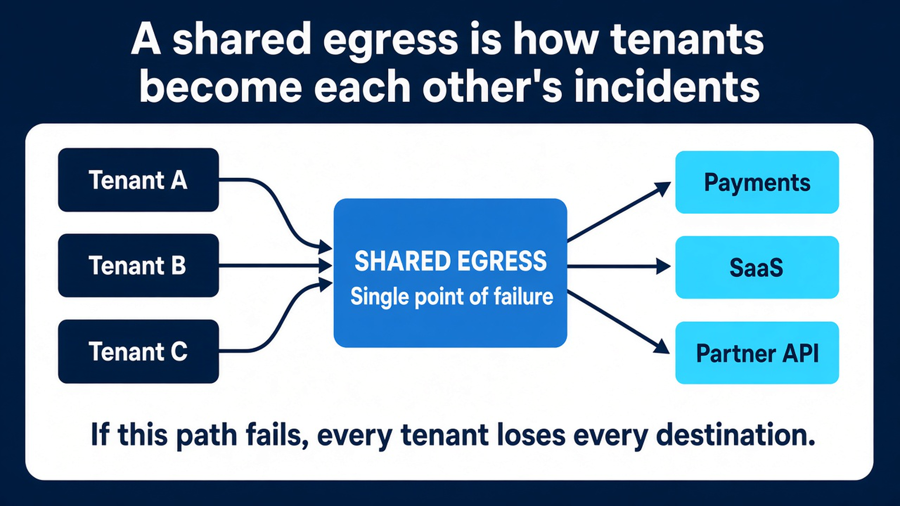

A shared egress is how tenants become each other's incidents
Tenant A deploys a change that increases outbound traffic or modifies its egress configuration. Shortly afterwards, Tenant B struggles to reach an external service it depends on. Tenant B's application hasn't changed. Its configuration hasn't changed. Yet its service is now impaired because of something another tenant did. This is the risk of shared egress.
In a multi-tenant platform, one tenant should not become another tenant's incident simply because they share infrastructure.
Shared egress can reduce infrastructure overhead, but it also introduces several risks.
1. Shared capacity
Tenant A experiences a spike in outbound traffic. Perhaps request volumes have increased, an external service is malfunctioning and triggering retries, or a bug has caused a retry loop. The shared egress infrastructure becomes saturated, degrading connectivity for other tenants. Their applications may then trigger their own retries, amplifying the problem.
Rate limiting can help, but managing it at scale is not trivial. Imagine X tenants, each running Y applications that access Z external services. The number of policies and rules can grow rapidly. Allocating capacity fairly also requires understanding each tenant's needs, which may change over time, sometimes on an hourly basis.
The question is not just whether egress has enough capacity. It's whether one tenant can consume capacity that other tenants depend on.
2. Shared configuration
A change to a common egress policy, gateway or firewall rule can unintentionally affect multiple tenants.
Maintaining tenant-specific configuration in a shared system requires careful separation and the ability to combine multiple sources of configuration safely. Concurrent changes also need to be handled without race conditions or unintended overwrites.
The result can be a significant amount of complexity for the platform team, even when tenants are only changing seemingly simple settings.
3. Shared external identity
Traffic leaving through a shared egress gateway may appear to external services to originate from the same public IP address.
This can complicate tenant-specific allowlisting, traffic attribution and troubleshooting, particularly when external systems use source IP addresses to identify or control access.
4. Shared failure domain
If a critical component of the shared egress path fails, multiple tenants may lose connectivity at the same time.
The more tenants depend on the same components, the greater the potential blast radius.
Shared egress concentrates both operational responsibility and failure risk.
When does shared egress make sense?
Shared egress can be a reasonable choice when tenants have predictable traffic patterns, configuration changes are well controlled, and the platform's regulatory, audit and traffic-isolation requirements are lightweight.
It becomes harder to justify when tenants have very different traffic profiles, require distinct external identities, need strong isolation, or operate under strict regulatory constraints.
Cost also deserves careful scrutiny. A shared solution may reduce infrastructure complexity, but network traffic is usually a major part of the overall bill anyway. The savings may therefore be smaller than expected compared to a per-tenant segregated egress solution, particularly once the engineering effort required to manage policies, capacity and failures is taken into account.
I would also be cautious about offering both shared and per-tenant segregated egress on the same platform. Supporting two models can complicate architecture, automation and operations for both the platform team and its tenants. That complexity needs to be justified by a meaningful difference in requirements or risk.
Questions I would ask before choosing
As a CTO, I would want clear answers to four questions:
- Capacity: Can one tenant's traffic degrade another tenant's connectivity?
- Blast radius: How many tenants could be affected by a single failure or configuration mistake?
- Availability: What happens to tenant connectivity if a shared egress component fails?
- Compliance: Does the applicable regulatory framework permit this degree of sharing, including its implications for traffic control and audit?
These are architectural trade-offs, not merely implementation details. They influence operational risk, support effort and the level of isolation the platform can offer.
Shared infrastructure creates shared risks and responsibilities. The purpose of a multi-tenant platform is to find the right trade-offs between shared infrastructure and tenant isolation.